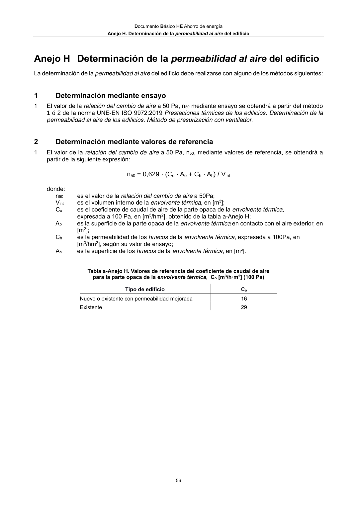

DB-HE · Determinación mediante valores de referencia · versión 2022-06-14 · capa oficial
Formatos: JSON compacto · Markdown · PDF fuente
Ámbito del documento · texto del ámbito · documento y tablas
ID técnico a0087 · PDF pág. 56 · jerarquía no validada por persona · contrastado con el literal de la página 56 (candidato tipográfico); no validado por persona · padre: a0085
Determinación mediante valores de referencia 1 El valor de la relación del cambio de aire a 50 Pa, n50, mediante valores de referencia, se obtendrá a partir de la siguiente expresión: n50 = 0,629 · (Co · Ao + Ch · Ah) / Vint donde: n50 es el valor de la relación del cambio de aire a 50Pa; Vint es el volumen interno de la envolvente térmica, en [m3]; Co es el coeficiente de caudal de aire de la parte opaca de la envolvente térmica, expresada a 100 Pa, en [m3/hm2], obtenido de la tabla a-Anejo H; Ao es la superficie de la parte opaca de la envolvente térmica en contacto con el aire exterior, en [m2]; Ch es la permeabilidad de los huecos de la envolvente térmica, expresada a 100Pa, en [m3/hm2], según su valor de ensayo; Ah es la superficie de los huecos de la envolvente térmica, en [m²]. Tabla a-Anejo H. Valores de referencia del coeficiente de caudal de aire para la parte opaca de la envolvente térmica, Co [m3/h·m2] (100 Pa) Tipo de edificio Co Nuevo o existente con permeabilidad mejorada 16 Existente 29

PDF fuente redistribuible: copia fiel enlazada en esta página (SHA256 verificado).